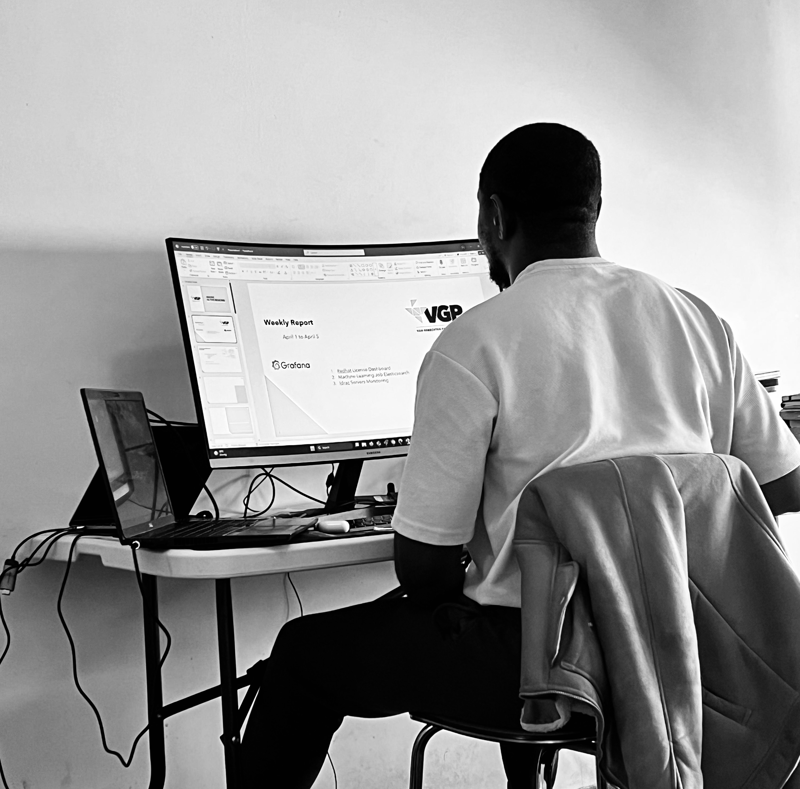

Data-Driven Explorer with a Global Journey
Birate Kabanza Arthur Turning data into decisions.
I turn raw data into meaningful visual insights. By combining analytical thinking with powerful data visualization techniques, I help organizations understand their data, identify patterns, and make confident decisions.
